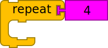
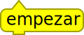
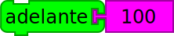
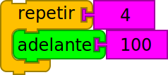
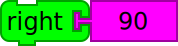
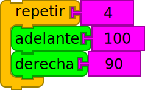

Drawing a Square using Repeat
Follow the step-by-step instructions below, or watch the video on the next page.
- From the home view, reopen Turtle Blocks

- Drag the stack of forward and right blocks off of the Start block
- Press the flow palette icon

- Drag a repeat block  onto the canvas and attach it below the start block 
- Drag a forward block  and attach it in the repeat block 
- Drag a right block  and attach it below the forward block 
- Press the eraser
 to clear your canvas
to clear your canvas - Press the snail
 and watch your turtle draw a square!
and watch your turtle draw a square! - See what happens when you change the number of repeats and the degrees to turn right. Can you draw a hexagon?
- Use the frame or keyboard to return to One Academy